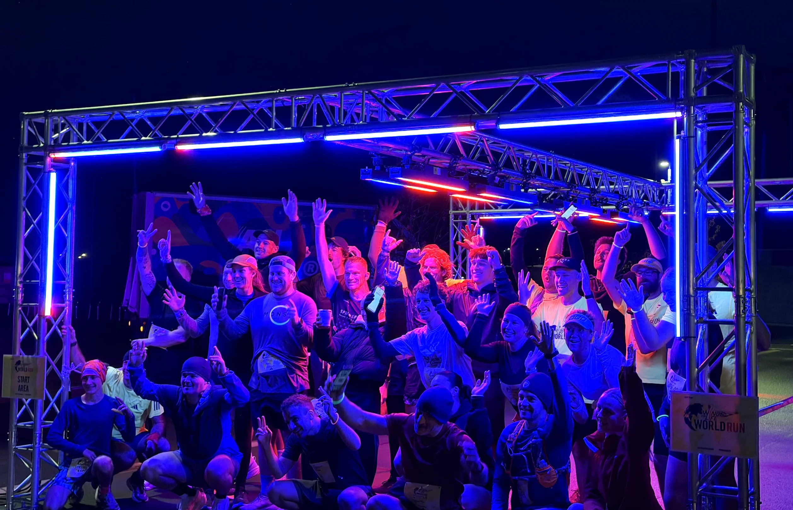
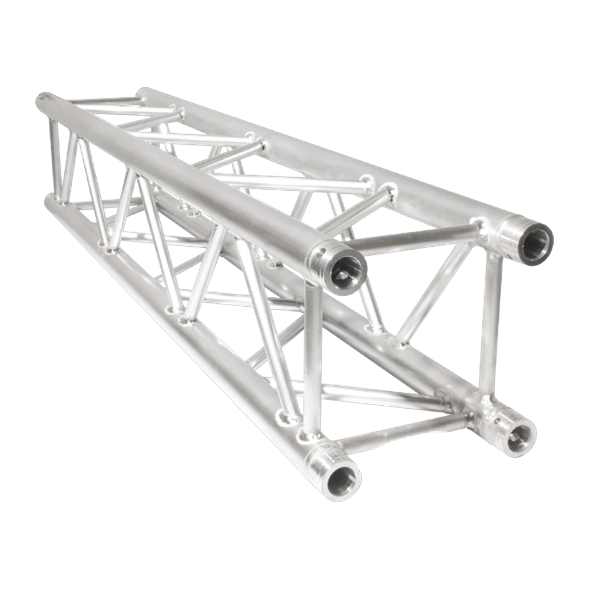
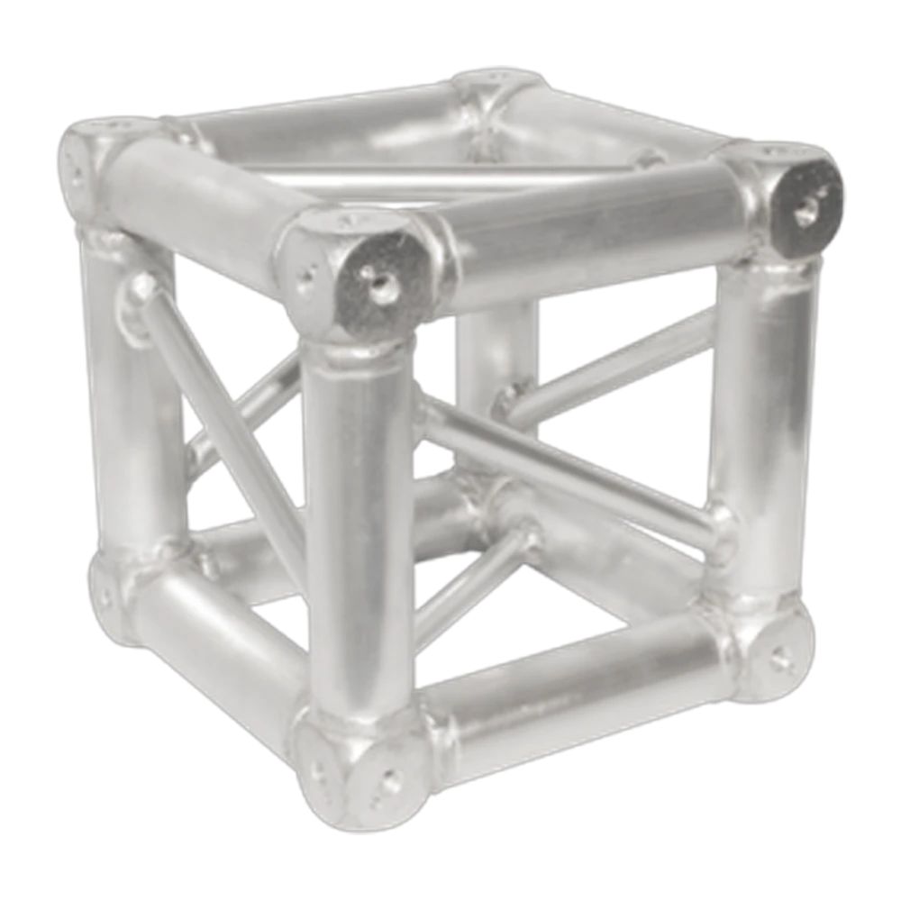
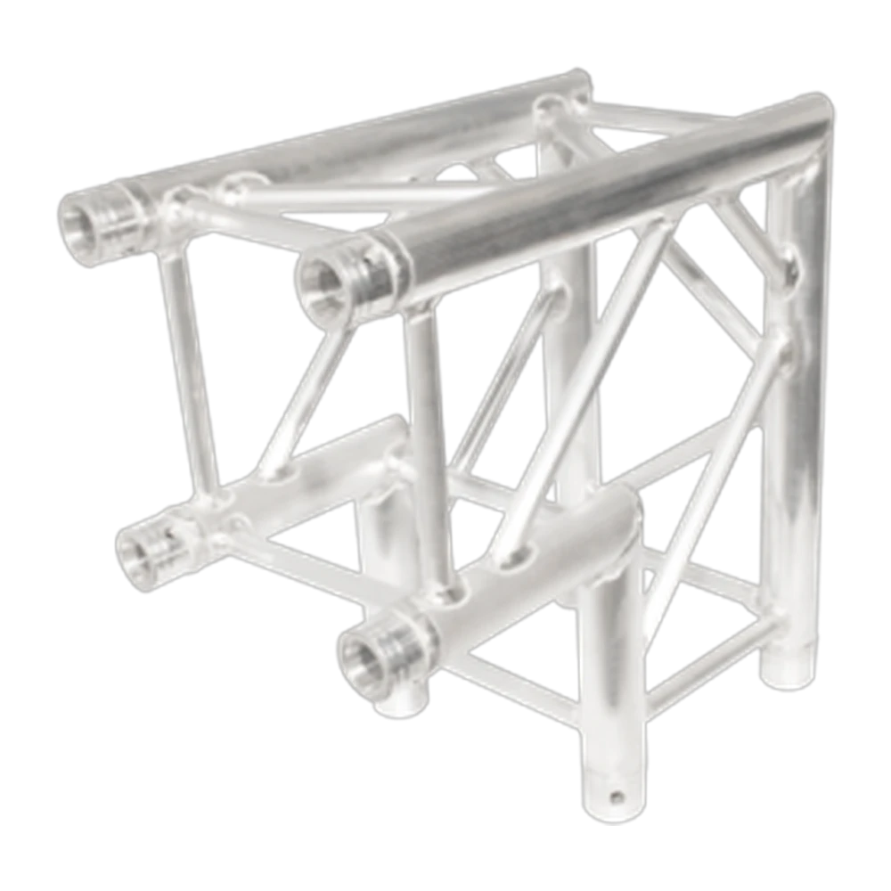
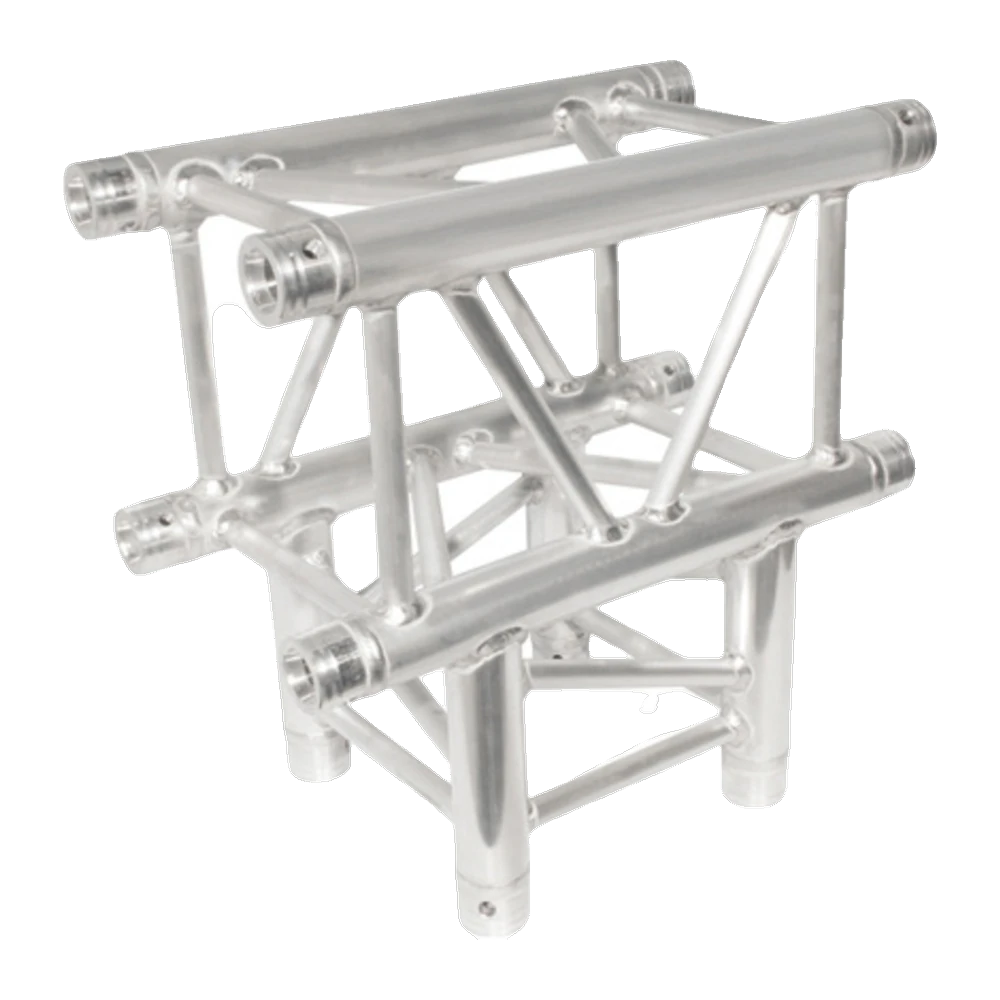

We carry F34 truss in silver with all lengths from 0.5m to 3m, plus box corners, 90-degree corners, and T-sections. Ground support systems, totems, and flying rigs. Black truss also available on request.
Our crew handle design, install, and packdown. For anything involving flying or overhead loads, we work with structural engineers where required.


$15 +GST per metre
Available in 0.5m, 1m, 1.5m, 2m, 2.5m, and 3m lengths. Silver finish as standard. Black truss available on request.

$25 +GST each
Standard box corner for joining truss at 90 degrees in two planes. Used for building square or rectangular frames.

$30 +GST each
For right-angle connections in a single plane. Used for portal frames, arches, and overhead structures.

$30 +GST each
Three-way junction for branching truss runs. Used for complex structures and multi-point rigging layouts.
Black truss available on request. Email us with your event details to get a quote and book.
Ground-supported truss structures for hanging moving heads, wash lights, and effects. From simple goal-post rigs to full box truss grids.
Truss structures for hanging line arrays, delay speakers, and PA clusters. We design the rigging plan and handle all the hardware.
Truss roof structures for outdoor stages, backdrop frames, and entrance arches. Crew trained for working at height.
Tell us what you need to rig and we\'ll design a solution and quote it.
Get in touch or call 021 178 0355.
F34 Eurotruss in silver. Lengths from 0.5m to 3m plus box corners, 90-degree corners, and T-sections. Black truss available on request.
Yes. We do ground-supported truss structures for hanging PA and lighting. For anything involving overhead flying, we work with structural engineers to ensure compliance.
For simple ground-supported rigs under standard load limits, not usually. For flying rigs, overhead structures, or anything attached to a venue\'s structure, we\'ll arrange engineering sign-off where required.
All Ears Events Limited
20 Southwark Street, Christchurch
021 178 0355 · hello@allears.nz
Mon-Fri 9am-4pm